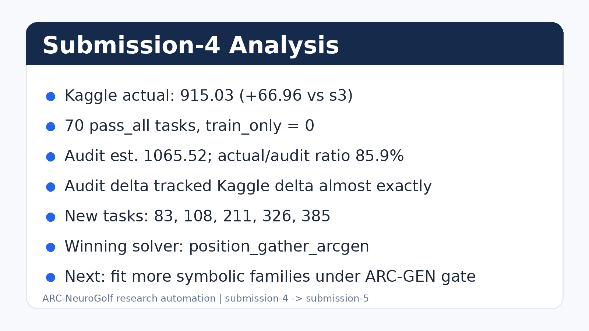
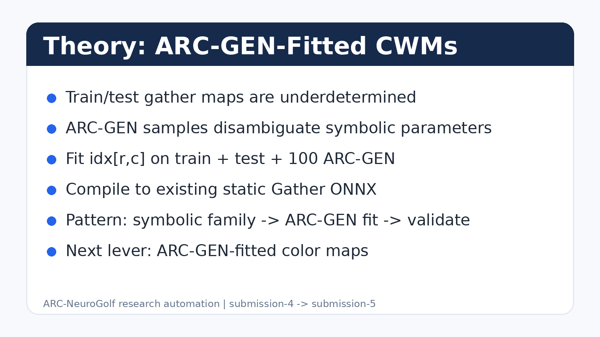
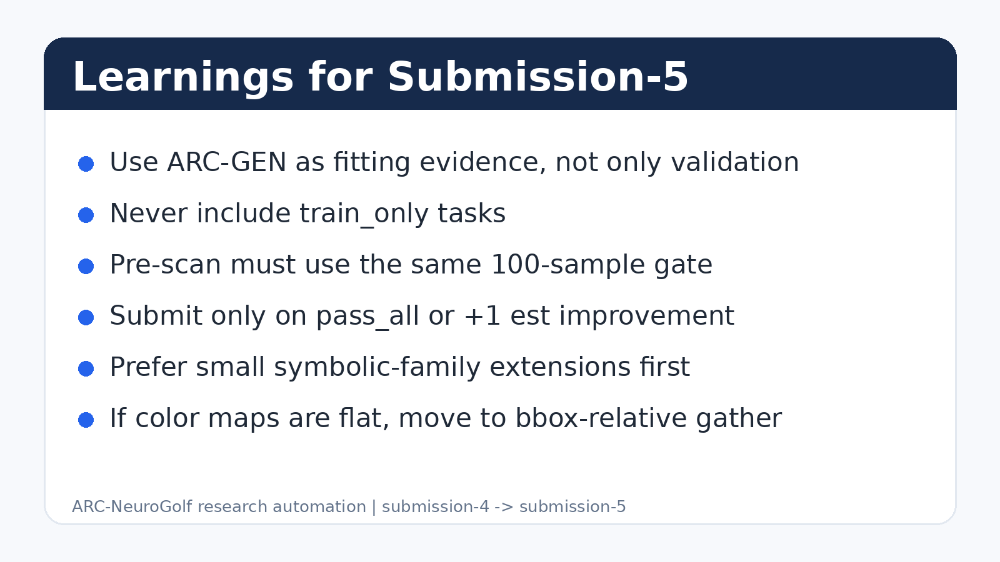

Analysis summary

Milestone: M9
ARC-Genome M9: 70 verified, est 1066, arcgen gather fit
| Date folder | 2026-06-17 |
|---|---|
| Submission number | 4 |
| Submitted at | — |
| Kaggle graded at | 2026-06-19T09:55:06.343691+00:00 |
| pass_all / solved tasks | 70 / 70 |
| Audit est. score | 1065.5 |
| Kaggle actual score | 915.03 |
| Phase | 15 |
| Milestone | M9 |
| Elapsed | 78.9 minutes |
| Submitted to Kaggle | yes |
| Files audited | 70 |
|---|---|
| pass_all | 70 |
| train_only | 0 |
| fail | 0 |
| Kaggle audit total | 1065.5174872118832 |
| Solver | Count |
|---|---|
| conv_diff | 19 |
| position_gather_arcgen | 18 |
| conv_fixed | 14 |
| conv_var | 7 |
| color_map | 4 |
| compose | 3 |
| transpose | 2 |
| bounded_flip_v | 1 |
| bounded_flip_h | 1 |
| bounded_upscale2 | 1 |



# Submission Analysis — submission-4 (M9) **Date:** 2026-06-17 **Kaggle:** **915.03** ✅ **Tasks:** **70 pass_all** (+5 vs submission-3) **Message:** `ARC-Genome M9: 70 verified, est 1066, arcgen gather fit` --- ## Score progression | Submission | Tasks | Audit est. | Kaggle actual | Δ tasks | Δ Kaggle | |---|---:|---:|---:|---:|---:| | submission-3 | 65 | 998.5 | 848.07 | — | — | | **submission-4** | **70** | **1065.5** | **915.03** | **+5** | **+66.96** | Predicted delta from audit: +67.0. Actual Kaggle delta: **+66.96** — effectively exact after the audit/Kaggle ratio held. --- ## Audit vs Kaggle ratio | Metric | Value | |---|---:| | Audit est. | 1065.52 | | Kaggle actual | **915.03** | | Actual / audit | **85.9%** | | Previous ratio (s2/s3) | ~84.9% | The audit remains a usable ranking signal: absolute values overstate by ~14%, but the **delta tracked exactly** for this run. --- ## What changed **Phase 15 ARC-GEN-fitted position gather** — compile the gather index map from `train + test + arc-gen[:100]`, not train/test alone. ### New tasks (pre-scan confirmed) | Task | Solver | |---|---| | 83, 108, 211, 326, 385 | `position_gather_arcgen` | ### Solver mix shift | Solver | s3 | s4 | Δ | |---|---:|---:|---:| | position_gather_arcgen | — | **18** | +18 | | position_gather | 7 | 0 | -7 | | concat | 5 | 0 | -5 | | compose | 3 | 3 | — | ARC-GEN-fitted gather replaced train-only gather/concat assumptions with circuits that survive the 100-sample validation gate. --- ## Run stats - Time: 4,734s (~79 min) - Pre-scan: 5 new candidates (exact) - pass_all: **70** - train_only: **0** - Submitted: ✅ --- ## What did not work yet | Target | Result | |---|---| | Single-hop jump toward 2000 | Still needs many more pass_all tasks | | Bounded autodiscover beyond existing rules | No new s4 coverage | | Train-only gather assumptions | Rejected unless ARC-GEN-fitted | --- ## Path to 2000 ```text 915 actual (s4) -> need +1085 more At 13 avg/task: ~84 more tasks At 20 avg/task: ~55 more tasks ``` submission-4 validates ARC-GEN fitting as a reliable delta lever. The next submission should keep the 100-sample gate and try small fitted-rule extensions before larger object programs. --- ## Takeaway **ARC-GEN-fitted gather converted synthetic validation into exact Kaggle lift.** The next lever is to fit other low-risk symbolic families on ARC-GEN while preserving the no-train-only invariant.
# Theory — submission-4 (Phase 15 / M9) **Change:** ARC-GEN-fitted gather index compilation **Result:** 70 pass_all, 915.03 Kaggle --- ## BLF update ```text Belief: train/test-consistent gather maps are underdetermined. Evidence: ARC-GEN samples disambiguate source indices. Decision: fit symbolic parameters on train + test + 100 ARC-GEN. ``` The useful abstraction is not "more search"; it is **parameter fitting under synthetic generator evidence**. --- ## Problem `position_gather` inferred `(sr, sc)` from train/test only. That creates value-ambiguous maps: several source cells can match tiny train/test grids, but only one survives generator variation. Train-only candidates are not useful for the competition loop because they inflate local coverage without Kaggle lift. --- ## Solution Fit index map `idx[r,c] -> (sr,sc)` such that every example in `train + test + arc-gen[:100]` satisfies: ```text output[r,c] = input[idx[r,c,0], idx[r,c,1]] ``` Then compile the result to the existing static `Gather` ONNX graph. The model class stays cheap; only the fitting evidence changes. ### Why it generalized - The generated samples varied enough to remove ambiguous source cells. - Validation used the same 100-sample gate before packaging. - The audit delta and Kaggle delta matched almost exactly. --- ## Code World Model implication The successful CWM pattern is: ```text symbolic family -> ARC-GEN parameter fit -> ONNX compile -> 100-sample validate ``` This is a safer path than adding train-only heuristics. New levers should extend the set of symbolic families that can be ARC-GEN-fitted. --- ## Next lever Phase 16 should stay small: fit another low-risk symbolic family on ARC-GEN before larger object-program work. Candidate order: | Lever | Reason | |---|---| | ARC-GEN-fitted color maps | Cheap, same-shape, no new compiler | | Bbox-relative gather | Plausible for layout variation, needs dynamic index compiler | | Object programs | Larger coverage potential, higher implementation risk | --- ## Phase config ```python set_phase(15) # phase 14 + arcgen_fit_gather ``` For follow-up work, `arcgen_validate_samples` must remain **>= 100** and train_only outputs must never be packaged. --- ## Takeaway **ARC-GEN is most valuable as a parameter-fitting oracle for symbolic Code World Models.** The submission-4 lift proves that fitted parameters can translate directly to Kaggle score when the validation gate is strict.
# Learnings — submission-4 (M9) **Outcome:** 70 pass_all, 915.03 Kaggle, +66.96 vs submission-3. --- ## Actionable rules 1. **Treat ARC-GEN as fitting evidence, not just validation.** The winning change moved parameter inference from train/test to train + test + 100 ARC-GEN. 2. **Never count train_only tasks as progress.** Local train/test wins only matter after the 100-sample ARC-GEN gate passes. 3. **Track deltas more than raw audit totals.** The audit absolute score was high by ~14%, but the s4 delta matched Kaggle almost exactly. 4. **Prefer low-risk symbolic family extensions.** Reusing the existing gather compiler kept the change small and made failures easy to reject. 5. **Seed preservation remains important.** Cost audit should keep prior ONNX when a new candidate is worse or absent. 6. **Pre-scan must match the production gate.** s4 worked because pre-scan and packaging both used full ARC-GEN validation. 7. **Large score goals require coverage, not only cheaper models.** At current yield, 2000 needs dozens more pass_all tasks. --- ## Carry-forward checklist | Rule | Submission-5 requirement | |---|---| | 100 ARC-GEN samples | `set_phase(16)` must keep `arcgen_validate_samples >= 100` | | No train_only | Submit only if audit reports `train_only == 0` | | Real improvement | Submit only on `pass_all > 70` or audit estimate >= baseline + 1 | | Minimal next lever | ARC-GEN-fit one cheap symbolic family before object-program expansion | --- ## Best next experiment Start with **ARC-GEN-fitted color maps** because it requires no new ONNX compiler and extends the successful "fit symbolic parameters from generator samples" pattern. If it produces no pass_all increase, the next meaningful lever is bbox-relative gather or object-level programs.
# Kaggle status — submission-4 # Graded at: 2026-06-19T09:55:06.343404+00:00 # Score: 915.03 # Status: SubmissionStatus.COMPLETE ref,fileName,date,description,status,publicScore,privateScore 53785600,submission.zip,2026-06-17 19:02:16.533000,"ARC-Genome M9: 70 verified, est 1066, arcgen gather fit",SubmissionStatus.COMPLETE,915.03,